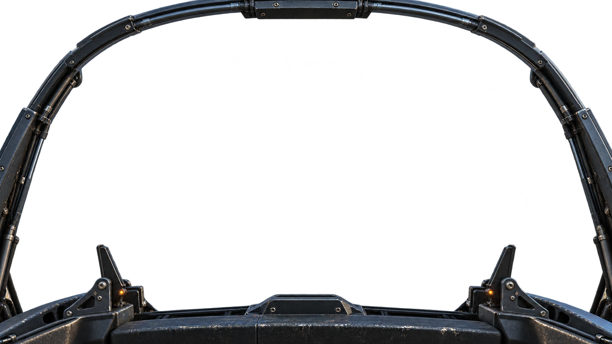

01 / VICTORIA HARBOURVICTORIA
HARBOUR維多利亞港 · 藍調時刻 · 海港截擊RAIN 19:24 HKT
VISIBILITY 8.0 KM
CENTRAL / MATERIAL STUDY海旁全景 · 1/24直接選擇灣仔景點，或切換其他地標

維港截擊行動擊落敵機 0 / 12敵機 5最近 360 m
搜尋目標
＋
機炮 0%
機炮預判
×
⚠ MAYDAY · MAYDAY機體失控碰撞 · 引擎起火 · 正在墜落
敵機喺正前方
AIRSPEED380KM/H
ALTITUDE160M
FALCON-01 / 獵隼
機體 100%導彈 6 / 6 火箭 4 · 干擾 3
W S 俯仰 · A D 轉向 · SHIFT 加速 · B 減速 · SPACE 機炮 · Q 導彈 · E 火箭 · F 干擾 · T 追蹤 · G 自動追擊 · C 視角 · P 暫停
SORTIE COMPLETE任務完成
擊落12飛行時間02:30
機炮／火箭命中率—導彈發射0累計受損0
FLIGHT PAUSED任務暫停
準備好再返回海港上空。